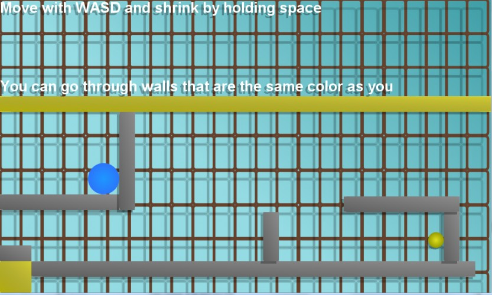
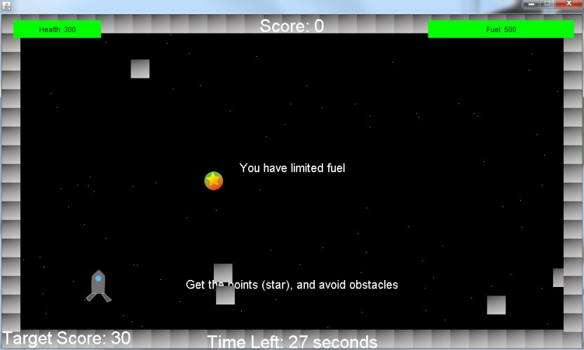

What is Ludum Dare?
Ludum Dare is a game jam where you get 48 or 72 hours to make a game based on a theme. It is three times per year. I have participated in 10 so far (Ludum Dare 30 - 39), and plan to take part in Ludum Dare 40 in December;
Some of my Ludum Dare Games
Escape The World

In this Ludum Dare competition, I got 68th in fun out of 1104. Escape The World is a small level based puzzle game made in 48 hours for Ludum Dare 38. There are multiple colors, you only control one at a time (with WASD), and hit space to switch. You can use blocks to stop you.
Ludum Dare Page: hereDownload: here
Connected Worlds

Connected Worlds is the first Ludum Dare game I have made, and has since been ported to Android as AntiVerse. In this game, the screen is split in two, and you must make try to reach the end on both screens. You control both characters at the same time, but the worlds are slightly different.
You must use the walls and other obstacles to get both to the end at the same time.
Download: here
Mr. Shifter
Mr. Shifter is a Ludum Dare game I made in early 2016. The theme this time was shapeshift, so I made a puzzle game based off of "shapeshifting", by changing your size. You go along the level trying to reach the end my growing and shrinking, and changing your color. Certain barriers only allow a certain color to pass. There is also a ball that you must move around and put on buttons to trigger doors.
Ludum Dare Page: hereDownload: here
The Rocket Mistake
The theme for this Ludum Dare was 2 button controls, so I made a game where you must control a space ship with only two controls. One spins you slightly right and forward, and the other slightly left and forward. In The Rocket Mistake, you must try to get as many points as possible without crashing into anything.
Ludum Dare Page: hereDownload: here